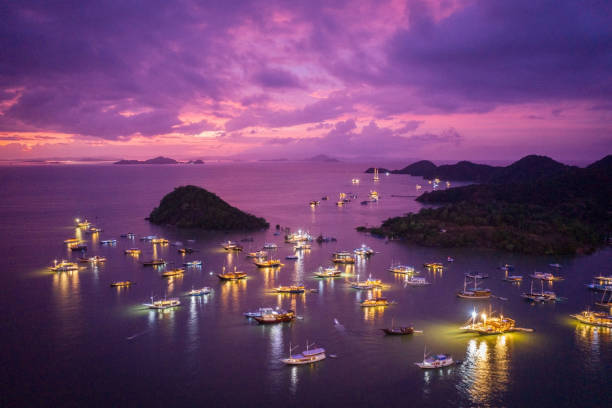
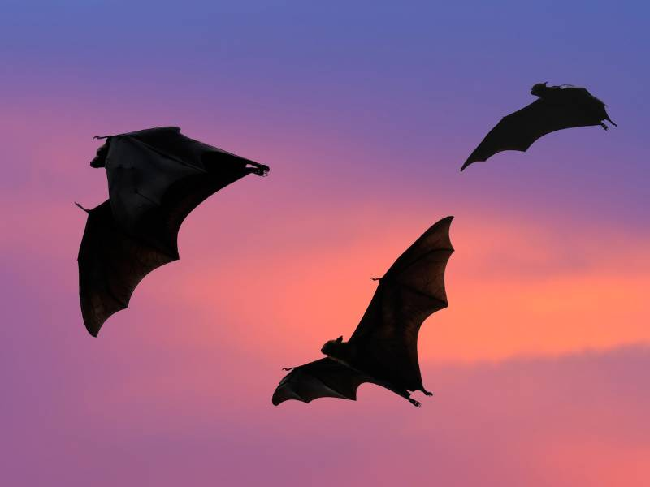
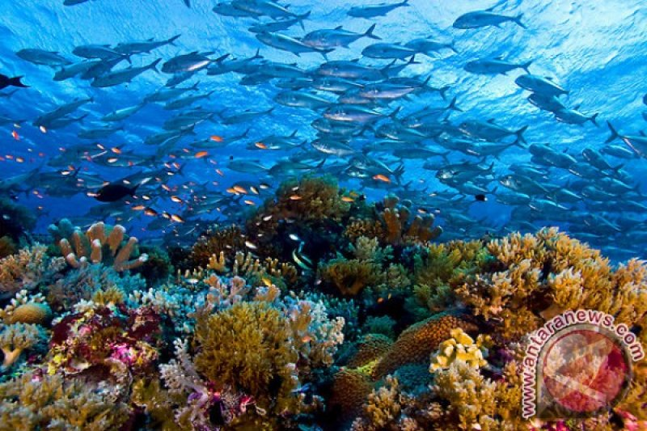

Flores Gallery
Pink Beach
Salah satu destinasi wisata paling ikonik di Flores adalah Danau Kelimutu, yang terdiri dari tiga kawah dengan warna air yang bisa berubah-ubah. Warna air danau ini dipengaruhi oleh kandungan mineral dan aktivitas vulkanik di bawahnya. Selain keunikan alamnya, Danau Kelimutu juga memiliki nilai spiritual bagi masyarakat setempat yang meyakini bahwa setiap danau merupakan tempat peristirahatan jiwa-jiwa yang telah meninggal.

Keindahan Alam
Pulau Flores terkenal dengan keindahan alamnya yang luar biasa, mulai dari pantai berpasir putih hingga perbukitan hijau yang memukau. Salah satu daya tarik utamanya adalah Taman Nasional Komodo, rumah bagi komodo, kadal purba terbesar di dunia. Selain itu, wisatawan dapat menikmati panorama Pulau Padar dengan perbukitannya yang dramatis serta snorkeling dan diving di perairan jernih yang kaya akan biota laut.

Welcome to Flores
Pulau Flores terletak di Provinsi Nusa Tenggara Timur, Indonesia. Nama "Flores" berasal dari bahasa Portugis yang berarti "bunga," mencerminkan keindahan alamnya yang luar biasa. Pulau ini terkenal dengan lanskapnya yang menakjubkan, mulai dari pegunungan hijau, danau kawah yang unik, pantai berpasir putih, hingga keanekaragaman hayati lautnya. Flores juga dikenal sebagai gerbang menuju Taman Nasional Komodo, rumah bagi Komodo, reptil purba terbesar di dunia. Selain itu, budaya dan tradisi lokal yang masih terjaga menjadi daya tarik tersendiri bagi wisatawan.
Kabupaten-Kabupaten di Pulau Flores
- Kab. Ende
- Kab. Larantuka
- Kab. Ruteng
- Kab. Bajawa
- Kab. Maumere
Flores Gallery
Segala Raksasa: Kalong
Selain kadal raksasa atau komodo, salah satu daya tarik unik di Flores adalah keberadaan kalong, kelelawar raksasa yang sering terlihat di sekitar Pulau Kalong, dekat Labuan Bajo. Kalong ini berukuran besar dengan bentang sayap yang bisa mencapai satu meter, dan mereka biasanya keluar saat senja untuk mencari makan.

Keindahan Alam
Pulau Flores dikelilingi oleh lautan yang indah, menjadikannya surga bagi para pecinta wisata bahari. Dari menyelam di perairan Pulau Kanawa yang penuh dengan terumbu karang, hingga menikmati keindahan Pink Beach yang unik dengan pasir berwarna merah muda, Flores adalah destinasi impian bagi wisatawan yang mencari petualangan bahari di Indonesia.
